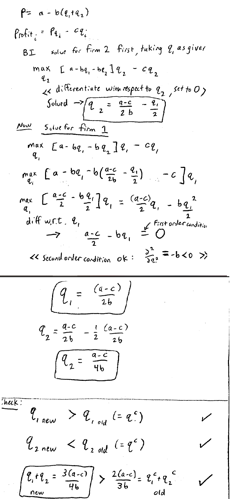

Lecture 14
古诺模型升级版
Lecture 6中，我们研究了古诺的模型，以各自收益为自变量，不断的改变产量，从而做出最佳的对策。
但是上面的模型是两个玩家同时进行的，在这门课的后半部分我们着重了解学习线性的决策博弈。
这相当于是之前模型的升级和拓展。(stackelberg model)。
假设这个生产模型由玩家1开始，由玩家2结束。我们使用backward induction来进行推导：
现在是已知玩家1的产量，玩家2会根据这条曲线进行产量的调节：如果玩家1产量比纳什均衡点大，那么玩家2一定是减小产量；如果玩家1产量比纳什均衡点小，那么玩家2增加产量。
这个时候玩家1知道这样的一条信息，因此他会扩大自己的生产，这个时候玩家2会减小自己的生产。从而玩家1在这个游戏中占有先手优势，并且会生产出比纳什均衡点大的产品。
总生产量会怎么变化？总生产量会变大。因为玩家1每多生产单位个商品，玩家2就会少生产一些产品。这个比率通过图中的斜线的斜率可以看出是大于1的。
总产量增加，价格下降，那么玩家2的利润减小，CS（consumer surplus）增加。
数学验证
下面就是进行简单的数学验证，我们会通过backward induction，首先为玩家2制定策略，然后为1指定策略。最后得到一个具体的结果。
通过具体的结果，我们发现与之前主观的推测是相同的。
比如玩家1的产量大于玩家2的产量，并且总的生产量是增加的。

- 为了能够使上面的猜想成立，必须有承诺(commitment)。沉没成本教训使得这样做有必要。
- 间谍或者拥有更多的信息有时候会有负面效果。
在这个例子中，假设玩家2在玩家1里安插了一个间谍，并且玩家1知道有这样的间谍，但是不知道具体是谁。
玩家1可以利用这个信息，将计就计，使得玩家2变得更加被动。
- 更多的信息有时候是不好的。
更多的选择有时候也是不好的——破釜沉舟就是减少自己选择的例子，使得战争获胜。
先手优势。
并不是总成立的。
反例：
- 剪刀石头布
- 比如考驾照，可以先等其他的学完考完，学习他们失败的经验，然后调整好自己进行考试。
NIM博弈
草我最熟悉的。。。这里就不记笔记了233
两堆数量相等的时候，后手优势
两堆数量不等的时候，先手优势。